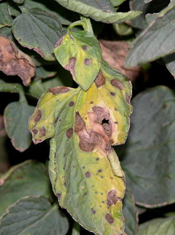
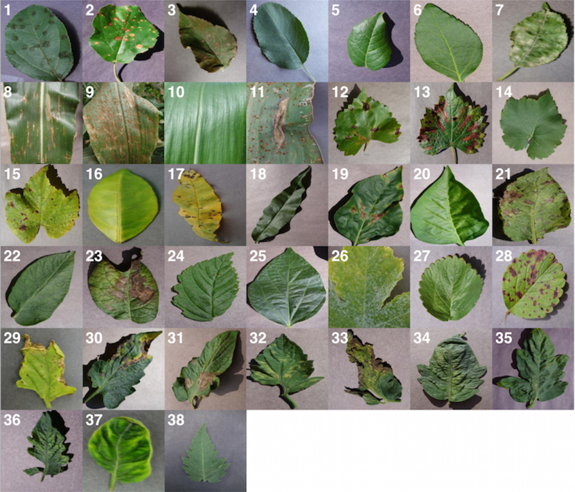

from PIL import Image
import numpy as np
image = Image.open("chemin/vers/image.jpg")
image = image.convert("RGB")
image = image.resize((256, 256))
image_array = np.array(image)Cas pratique — Diagnostic des plantes avec Random Forest
Objectif du cas pratique
Dans ce cas pratique, nous utilisons des images de feuilles de pomme de terre pour illustrer un problème de classification en Machine Learning.
L’objectif est de construire un modèle capable de distinguer plusieurs états de la feuille à partir d’informations extraites des images.
Les trois classes utilisées dans le notebook sont :
Healthy: feuille saine ;Early_blight: mildiou précoce ;Late_blight: mildiou tardif.
NoteSource du jeu de données
Les images utilisées pour constituer le jeu de données proviennent du PlantVillage Dataset.
Consulter et télécharger le PlantVillage Dataset sur GitHub
Le dépôt contient une collection d’images de feuilles saines et malades utilisées dans de nombreux travaux pédagogiques et expérimentaux sur la reconnaissance des maladies des plantes.
Comprendre le problème
Le principe général est le suivant :
Images de feuilles
↓
Préparation des images
↓
Extraction de caractéristiques
↓
Variables X
↓
Classe y
↓
Entraînement du Random Forest
↓
Prédiction
↓
ÉvaluationL’objectif n’est donc pas simplement d’afficher une image, mais de transformer chaque image en informations numériques pouvant être utilisées par un algorithme de Machine Learning.
Exemples visuels
Feuille saine
Une feuille saine présente une coloration relativement homogène et ne montre pas de lésions importantes visibles.
Feuille présentant des symptômes

Les feuilles malades peuvent présenter des taches brunes, des zones nécrotiques, un jaunissement ou d’autres modifications de couleur et de texture.
Autre exemple de feuille
Ces variations visuelles constituent des informations que l’on peut tenter de représenter par des variables numériques.
Vue d’ensemble du type de données

Un jeu d’images peut contenir une grande diversité de formes, de couleurs et de symptômes. Le modèle doit apprendre à distinguer les classes à partir des exemples fournis pendant l’entraînement.
Exemples de diversité dans le jeu de données
L’image ci-dessous illustre la diversité des feuilles et des symptômes pouvant apparaître dans un jeu de données de diagnostic végétal.

Cette diversité visuelle montre pourquoi un modèle doit apprendre à distinguer plusieurs combinaisons de couleur, texture, forme et lésions foliaires plutôt que de se baser sur un seul symptôme.
1. Organiser les images
Dans le notebook, les images sont organisées par classe.
Une structure typique peut être :
dataset/
├── Healthy/
├── Early_blight/
└── Late_blight/Chaque dossier contient des images correspondant à une classe.
2. Charger et préparer une image
Avant d’utiliser une image dans le modèle, on doit la lire et la transformer en un format cohérent.
Exemple :
La conversion en RGB garantit que chaque image possède trois canaux de couleur :
- rouge ;
- vert ;
- bleu.
3. Extraire des caractéristiques
Un Random Forest ne traite pas directement l’image comme un réseau de neurones convolutionnel.
Il faut d’abord transformer l’image en variables numériques.
Par exemple, on peut calculer des caractéristiques basées sur les valeurs des canaux RGB :
moyenne_rouge = image_array[:, :, 0].mean()
moyenne_vert = image_array[:, :, 1].mean()
moyenne_bleu = image_array[:, :, 2].mean()Ces variables résument une partie de l’information contenue dans l’image.
NotePrincipe
L’image est transformée en une ligne de données :
Image → caractéristiques numériques → modèleC’est cette représentation numérique qui est utilisée par le Random Forest.
4. Construire les variables X et y
X contient les caractéristiques extraites des images.
y contient la classe de chaque feuille.
X = donnees_caracteristiques
y = classesExemple :
Healthy → 0
Early_blight → 1
Late_blight → 25. Séparer les données
Il est important de ne pas évaluer le modèle uniquement sur les images utilisées pour l’entraînement.
from sklearn.model_selection import train_test_split
X_train, X_test, y_train, y_test = train_test_split(
X,
y,
test_size=0.25,
random_state=42,
stratify=y
)On obtient alors :
- un jeu d’entraînement ;
- un jeu de test.
6. Entraîner le Random Forest
from sklearn.ensemble import RandomForestClassifier
modele = RandomForestClassifier(
n_estimators=200,
random_state=42
)
modele.fit(
X_train,
y_train
)Le modèle apprend à associer les caractéristiques numériques des images aux différentes classes.
7. Faire des prédictions
predictions = modele.predict(
X_test
)Chaque image du jeu de test reçoit alors une classe prédite.
8. Évaluer le modèle
Accuracy
from sklearn.metrics import accuracy_score
accuracy = accuracy_score(
y_test,
predictions
)
print("Accuracy :", accuracy)Dans le notebook de cours, un exemple d’exécution obtient environ 86,7 % d’accuracy, soit 65 images correctement classées sur 75.
AvertissementInterprétation
Cette valeur dépend du jeu de données, de la séparation train/test, des caractéristiques extraites et des paramètres du modèle.
Une bonne accuracy ne signifie pas nécessairement que toutes les classes sont aussi bien reconnues.
Rapport de classification
from sklearn.metrics import classification_report
print(
classification_report(
y_test,
predictions
)
)Le rapport permet d’examiner les performances par classe.
Dans l’exemple du notebook, la classe Late_blight est la plus difficile à distinguer.
9. Matrice de confusion
from sklearn.metrics import confusion_matrix
matrice = confusion_matrix(
y_test,
predictions
)
print(matrice)La matrice de confusion permet d’identifier :
- les images correctement classées ;
- les confusions entre
Healthy,Early_blightetLate_blight; - les classes pour lesquelles le modèle rencontre le plus de difficultés.
10. Importance des variables
Le Random Forest permet également d’examiner l’importance des caractéristiques utilisées.
importances = modele.feature_importances_
print(importances)Cela permet d’identifier quelles caractéristiques numériques contribuent le plus aux décisions du modèle.
NoteAttention
L’importance d’une variable indique son utilité dans le modèle. Elle ne prouve pas qu’elle est biologiquement responsable de la maladie.
11. Tester une nouvelle feuille
Une fois le modèle entraîné, on peut préparer une nouvelle image avec exactement la même procédure.
Le workflow devient :
Nouvelle image
↓
Redimensionnement
↓
Extraction des mêmes caractéristiques
↓
Random Forest
↓
Classe préditeExemple :
nouvelle_prediction = modele.predict(
caracteristiques_nouvelle_image
)
print(nouvelle_prediction)Limites et bonnes pratiques
Ce cas pratique montre comment construire une première chaîne de classification d’images avec un Random Forest.
Pour une application scientifique ou opérationnelle, il faudrait notamment :
- disposer d’un jeu de données représentatif des conditions locales ;
- vérifier la qualité des étiquettes ;
- utiliser suffisamment d’images pour chaque classe ;
- tester le modèle sur des données indépendantes ;
- analyser les erreurs de classification ;
- faire valider l’interprétation par des spécialistes du domaine.
AstucePoints à retenir
- Une image doit être transformée en informations numériques pour être utilisée par un Random Forest.
- Le jeu de données contient plusieurs classes de feuilles.
- Les données doivent être séparées entre entraînement et test.
- La matrice de confusion permet d’identifier les types d’erreurs.
- Une accuracy globale doit toujours être complétée par une analyse des performances par classe.
- Les résultats du modèle doivent être interprétés avec prudence dans un contexte agronomique réel.